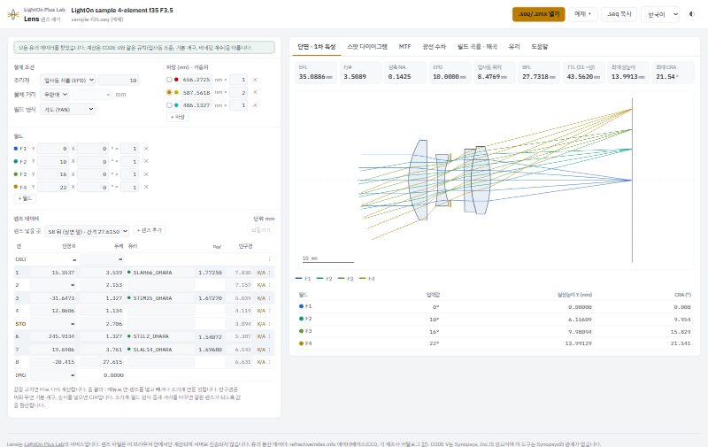
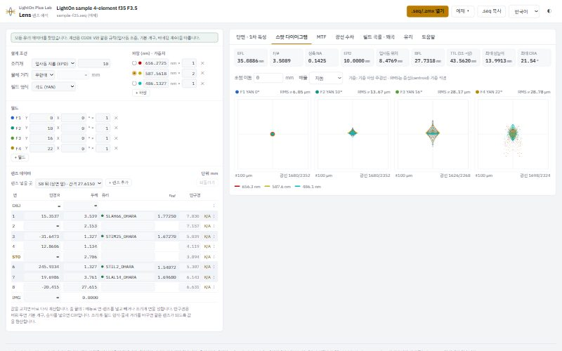
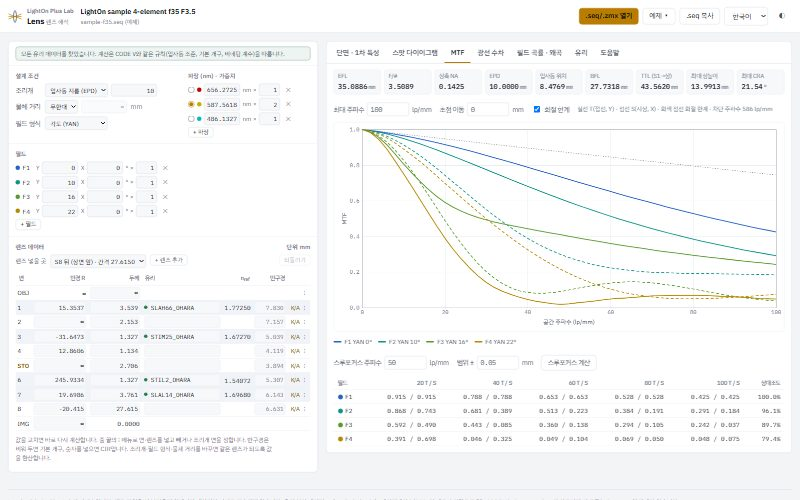
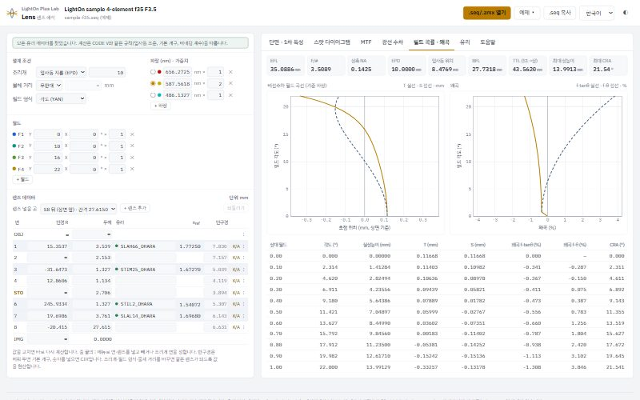

예제로 들어 있는 4매 f35 F3.5(자체 설계한 테사 타입). 왼쪽에서 설계 조건과 처방을 고치고, 오른쪽에서 해석을 봅니다.
파일은 브라우저 안에서만 계산되고 서버로 올라가지 않습니다. 렌즈 처방은 그 자체가 설계입니다. 남의 서버에 올려 두고 해석할 수 있는 물건이 아니라서, 계산을 전부 브라우저 안에서 하도록 만들었습니다. 파일을 놓는 순간부터 그 데이터는 이 컴퓨터를 떠나지 않습니다.
무엇을 보여주나
해석 탭 여섯 개. 열면 바로 계산해서 그립니다.
01
단면 · 1차 특성렌즈 단면과 광선 경로. 초점거리·F수 같은 1차량을 함께 읽습니다.
02
스팟 다이어그램기준 파장 주광선을 기준으로, RMS는 중심(centroid) 기준 직경으로 냅니다.
03
MTF회절 한계를 같이 그려 어디까지가 설계 여유인지 보입니다. 스루포커스는 초점 이동 ±5~50 µm.
04
광선 수차왼쪽은 접선(Y) εy vs 동공 Py, 오른쪽은 시상(X) εx vs Px. 단위 µm.
05
필드 곡률 · 왜곡비점수차 필드 곡선을 T 실선·S 점선으로, 왜곡은 f·tanθ와 f·θ 기준을 함께.
06
유리SCHOTT·HOYA·OHARA·CDGM·SUMITA·HIKARI 6개사 1,615종과 석영·CaF₂·PMMA 같은 일반 재료. refractiveindex.info 공개 데이터.



고쳐 가며 봅니다
읽기만 하는 뷰어가 아닙니다. 표의 값을 고치면 그 자리에서 다시 계산합니다.
면 데이터반경·두께·유리·반구경(CIR)을 바로 고칩니다. 줄 끝 ⋮ 메뉴로 면이나 렌즈를 넣고 빼거나 조리개 면을 옮기고, 되돌리기로 언제든 돌아갑니다.
설계 조건 · 필드 · 파장조리개는 EPD·F/#·NA로, 물체는 무한대나 유한 거리로, 필드는 각도·물체 높이·상 높이로 지정합니다. 형식을 바꾸면 같은 렌즈가 되도록 값을 환산하고, 파장과 필드는 더하거나 뺄 수 있습니다.
줌 위치줌 렌즈는 구간을 전환해 가며 각 위치의 성능을 확인합니다.
시작하는 법
파일을 끌어다 놓기
.seq 또는 .zmx 파일을 화면에 놓으면 바로 열립니다. 붙여넣기도 됩니다.가진 파일이 없다면예제 렌즈가 들어 있습니다. 눌러서 전체 흐름을 먼저 보셔도 됩니다.
네 개 언어한국어 · English · 日本語 · 中文. 어두운 화면으로 바꿔 쓸 수 있습니다.